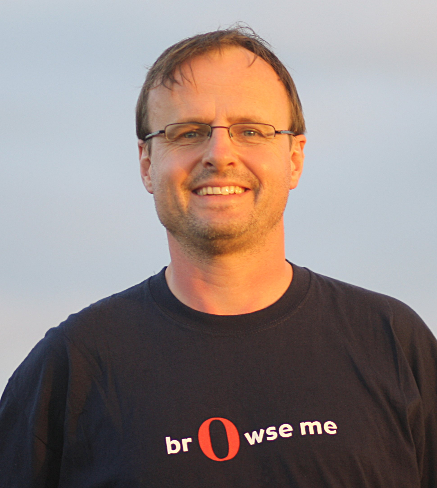

History of HTML, CSS, and JavaScript
Hypertext Markup Language (HTML)

Hypertext Markup Language (HTML) is the standard markup language for documents designed to be displayed in a web browser. It can be assisted by technologies such as Cascading Style Sheets (CSS) and scripting languages such as JavaScript. In 1980, physicist Tim Berners-Lee, a contractor at CERN, proposed and prototyped ENQUIRE, a system for CERN researchers to use and share documents. In 1989, Berners-Lee wrote a memo proposing an Internet-based hypertext system. Berners-Lee specified HTML and wrote the browser and server software in late 1990. That year, Berners-Lee and CERN data systems engineer Robert Cailliau collaborated on a joint request for funding, but the project was not formally adopted by CERN. In his personal notes from 1990 he listed "some of the many areas in which hypertext is used" and put an encyclopedia first.
Cascading Style Sheets (CSS)

Cascading Style Sheets (CSS) is a style sheet language used for describing the presentation of a document written in a markup language like HTML. CSS is a cornerstone technology of the World Wide Web, alongside HTML and JavaScript. CSS is designed to enable the separation of presentation and content, including layout, colors, and fonts. This separation can improve content accessibility, provide more flexibility and control in the specification of presentation characteristics, enable multiple web pages to share formatting by specifying the relevant CSS in a separate .css file, and reduce complexity and repetition in the structural content. CSS was first proposed by Håkon Wium Lie on October 10, 1994. At the time, Lie was working with Tim Berners-Lee at CERN. Several other style sheet languages for the web were proposed around the same time, and discussions on public mailing lists and inside World Wide Web Consortium resulted in the first W3C CSS Recommendation (CSS1) being released in 1996. In particular, a proposal by Bert Bos was influential; he became co-author of CSS1, and is regarded as co-creator of CSS.
JavaScript

JavaScript often abbreviated as JS, is a high-level, interpreted scripting language that conforms to the ECMAScript specification. JavaScript has curly-bracket syntax, dynamic typing, prototype-based object-orientation, and first-class functions. Alongside HTML and CSS, JavaScript is one of the core technologies of the World Wide Web. JavaScript enables interactive web pages and is an essential part of web applications. The vast majority of websites use it, and major web browsers have a dedicated JavaScript engine to execute it. As a multi-paradigm language, JavaScript supports event-driven, functional, and imperative (including object-oriented and prototype-based) programming styles. It has APIs for working with text, arrays, dates, regular expressions, and the DOM, but the language itself does not include any I/O, such as networking, storage, or graphics facilities. It relies upon the host environment in which it is embedded to provide these features. Brendan Eich is an American technologist and creator of the JavaScript programming language. He co-founded the Mozilla project, the Mozilla Foundation and the Mozilla Corporation, and served as the Mozilla Corporation's chief technical officer and briefly, as its chief executive officer. He is the CEO of Brave Software.